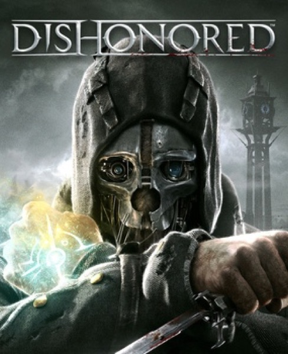

Immersive Sim · 2012
Dishonored
A plague city built so every rooftop was a solution.

Cover: Wikipedia: Dishonored
Facts
- Released
- 2012-10-09
- Genre
- Immersive Sim
- Category
- Immersive Sim
- Platforms
- PC, PlayStation, Xbox
- Developers
- Arkane Studios
- Publishers
- Bethesda Softworks
PC requirements
- Minimum
- [object Object]
- Recommended
- [object Object]